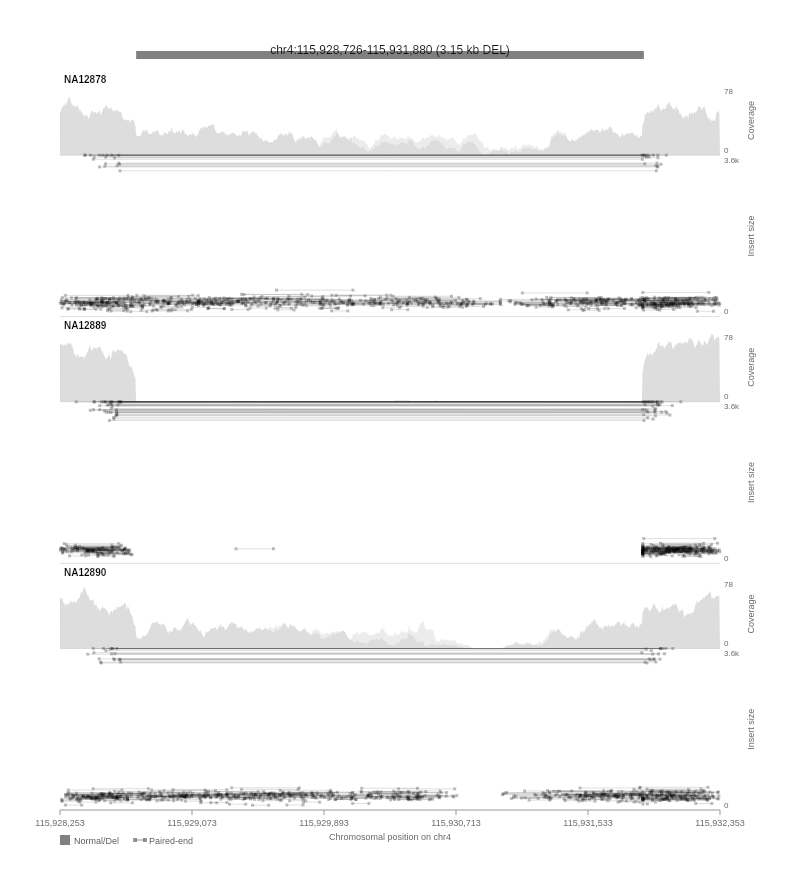
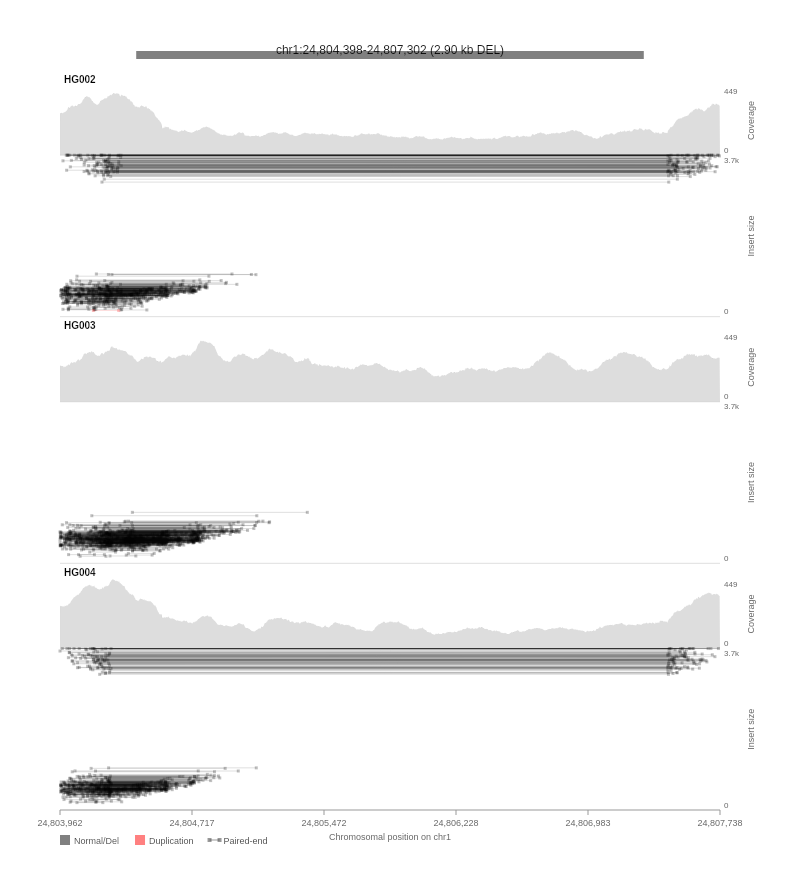
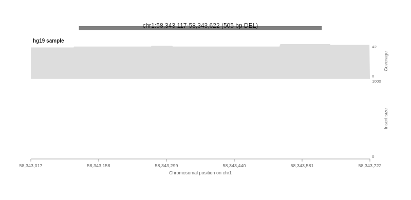
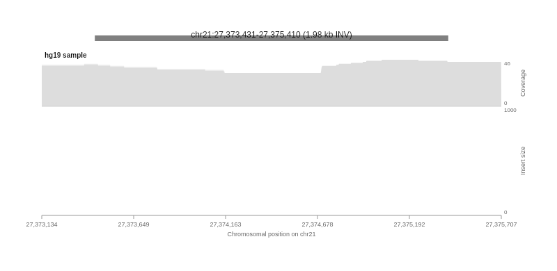

Read indexed BAM files directly in the browser and render samplot-style visualizations on HTML5 Canvas — no server required.
A ~3.2 kb heterozygous deletion rendered live from BAM data. This visualization is generated by svplot-js running in your browser right now.
Stacked filled areas show high-MAPQ (dark) and low-MAPQ (light) coverage. The deletion region shows a clear coverage drop.
Black lines with square markers represent paired-end reads. Reads spanning deletion breakpoints show abnormally large insert sizes.
Dotted lines with circle markers show split reads that span breakpoints with segments mapping on each side of the deletion.
The thick semi-transparent bar marks the exact variant coordinates and annotates the SV size (~3.2 kb).
A browser-native tool for exploring structural variants interactively.
Reads indexed BAM/BAI files directly using @gmod/bam. Supports remote URLs and local files — no upload needed.
High-performance HTML5 Canvas engine matching Python samplot's visual style. Renders coverage, read pairs, split reads, and annotations.
Visualize multiple BAM samples side-by-side. Compare trio data (proband + parents) or case vs. control at a glance.
Stacked coverage areas with high/low MAPQ separation. Instantly spot deletions, duplications, and copy-number changes.
Zoom in, zoom out, and pan across the genome. Dynamically re-fetch reads and re-render as you explore different regions.
Reads colored by SV type: black for deletions, red for duplications, blue for inversions. Quickly identify supporting evidence.
| Visual Element | Style | Color |
|---|---|---|
| Paired-end reads | Solid line + square markers | Black (DEL) · Red (DUP) · Blue (INV) |
| Split reads | Dotted line + circle markers | Same as paired-end |
| Coverage (high MAPQ) | Filled area | Dark grey, α 0.4 |
| Coverage (low MAPQ) | Filled area (stacked) | Light grey, α 0.15 |
| Variant bar | Thick horizontal line | Black, α 0.5 |
Drop in the UMD bundle and visualize structural variants in a few lines of code.
// 1. Include the container and script
// <div id="samplot-container" style="width:800px;"></div>
// <script src="samplot.js"></script>
// 2. Create a viewer and plot
const viewer = new Samplot({
container: '#samplot-container',
samples: [
{ url: '/data/NA12878.bam', label: 'NA12878' },
{ url: '/data/NA12889.bam', label: 'NA12889' },
{ url: '/data/NA12890.bam', label: 'NA12890' },
],
chrom: 'chr4',
start: 115928726,
end: 115931880,
svType: 'DEL',
});
await viewer.plot();
// 3. Navigate to a new region
viewer.navigate('chr1', 58343117, 58343622, 'DEL');
// 4. Access processed data programmatically
const data = viewer.getData();// Use local BAM files from file inputs — no upload needed
const viewer = new Samplot({
container: '#container',
samples: [
{
bamFile: bamFileObject, // File from <input type="file">
indexFile: baiFileObject, // Corresponding .bai file
label: 'My Sample',
},
],
chrom: 'chr4',
start: 115928726,
end: 115931880,
svType: 'DEL',
});
await viewer.plot();All images below are automatically generated from real BAM data on every commit via CI.

NA12878 / NA12889 / NA12890 trio — ~3.2 kb heterozygous deletion

HG002 / HG003 / HG004 trio — ~2.9 kb deletion

hg19 long-read — ~505 bp deletion

hg19 long-read — ~2.0 kb inversion